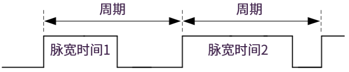
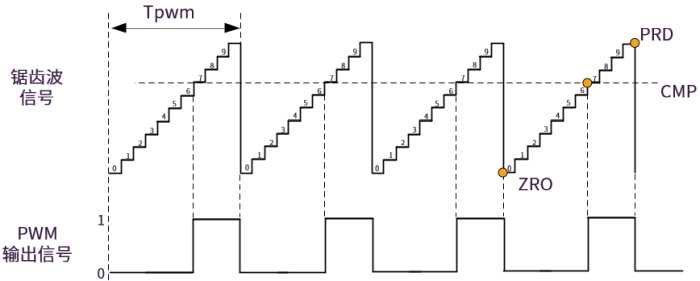
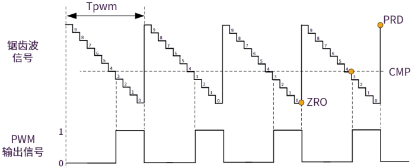

PWM 使用指南
术语/缩略语 |
定义及说明 |
|---|---|
PWM |
Pulse-Width Modulation，脉冲宽度控制，简称脉宽调制 |
EPWM |
Enhanced Pulse-Width Modulation, 增强型脉冲宽度控制（Luban-Lite 中 EPWM 功能与 PWM 相同，如无特殊说明，两者通用） |
TBC |
Time Base Counter，时基计数器，用于产生锯齿波 |
占空比 |
PWM 信号中，高电平保持的时间 与 该 PWM 时钟周期的时间之比 |
分辨率 |
占空比最小能达到多少，如 8 位的 PWM 理论分辨率是 1:255 |
Up Count |
增模式, 计数方式是递增计数，如从 0 计数到 80、之后又从 0 到 80（波形是锯齿波） |
Down Count |
减模式, 计数方式是递减计数，如从 80 计数到 0、之后又从 80 到 0（波形是锯齿波） |
单斜率 |
单个方向的计数，增模式、减模式都属于单斜率 |
Up&Down Count |
增减模式，计数方向有两个，如从 0 计数到 80、然后从 80 到 0（波形是三角波），
增、减两个过程合起来算一个周期
|
双斜率 |
两个方向的计数，增减模式属于双斜率 |
PWM 工作原理
-
PWM 信号
PWM 信号通常由一列占空比不同的矩形脉冲构成，其占空比可以调节。用数字输出来控制 PWM 占空比，占空比提高意味着高电平脉宽增大，输出的能量就会增加，PWM 就相当于一个 功率版的 DA 转换模块。下图是一个典型的 PWM 信号波形：

图 1. 典型的 PWM 信号波形 占空比的计算方法：
占空比=(脉宽时间/周期)*100%结合上图，我们可以说： 脉宽时间 1 相比 脉宽时间 2 提供较小的占空比。
PWM 通常用于背光亮度调节、电机控制、舵机控制等。本文仅限于 PWM 调节背光的功能，通过调节 PWM 中的占空比，达到控制 LED 背光电流的通和断，进而可调整背光亮度。
-
增模式
为了灵活调节 PWM 信号的占空比，要先想办法产生一个递增、或者递减的锯齿波信号，另外再结合一个比较器来跟一个阈值进行比较，当满足条件时进行电平反转，这样达到的效果就是通过调节“阈值”来调节了占空比。
下图是由一个 递增变化 的锯齿波产生 PWM 信号的过程：

图 2. 由增模式锯齿波产生 PWM 信号的过程示意图 图中 Tpwm 表示 PWM 信号的周期值，另外有 三个关键的时间点（下文简称关键时点） （标注橙色圆圈，为了简洁只标注了最后一个周期）在下文中会频繁使用：
-
- ZRO
-
Zero Point 的缩写，锯齿波的起始点
-
- PRD
-
Preiod Point 的缩写，锯齿波到达一个满周期的时间点
-
- CMP
-
Compare Point 的缩写，锯齿波到达了阈值的时间点，如上图中的 CMP 值为 7。
提示：实际上，PWM 模块支持设置两个 CMP 值：CMPA 和 CMPB。受限于 OS 中 PWM 子系统架构的接口设计，根据 duty 参数计算只能得到一个 CMP 值，所以 CMPB 和 CMPA 实际上数值保持一致。
这些关键时点的触发行为 Action 有四种类型，详见 参数配置
-
-
减模式
下图是由一个 递减变化 的锯齿波产生 PWM 信号的过程：

图 3. 由减模式锯齿波产生 PWM 信号的过程示意图 -
增减模式
下图是由一个 同时有递减、递减变化 的锯齿波产生 PWM 信号的过程：

图 4. 由增减模式锯齿波产生 PWM 信号的过程示意图 比较以上三种模式的 PWM 产生过程，可以看到：
-
三种模式可以产生同样效果的 PWM 信号
-
配置 ZRO、CMP（增减模式中有两处 CMP）、PRD 的触发行为（Action），可产生不同的 PWM 信号
-
CMP 的取值，直接决定了占空比，所以用户看到的 调节占空比就是通过调节 CMP 值来实现
-
PRD 的值，决定了 PWM 信号的周期值 Tpwm
提示：-
具体选择哪一种模式，要依据用户场景的需求特点，建议按 从简原则：首选相对简单的单斜率模式。
-
为了简化使用，RTOS 中默认只使用 增模式。
-
PWM 功能简介
PWM 的硬件设计，使用时基计数器产生上述的锯齿波信号，使用一个比较器可同时产生两路 PWM 信号。 PWM 模块的硬件原理图可简化如下：

PWM 模块共支持 4 个 PWM 通道，上图只画出了其中一个 PWM 通道，每个通道有 PWMx0 和 PWMx1 两个输出信号，对应 DTS 参数中的 action0 和 action1 配置。 参数配置
PWM 模块支持的功能特性有：
- 每个 PWM 通道可以产生 PWMx0 和 PWMx1 输出信号，配置规则如下：注：
在用户手册 > 接口 > PWM 模块中，上述两个 PWM 输出信号被称作 PWMxA 和 PWMxB。为了避免和阈值 CMPA 和 CMPB 混淆，软件设计中将两个输出信号称作 PWMx0 和 PWMx1。
-
两个独立的单边输出
-
两个独立的双边对称输出
-
一个独立的双边非对称输出
-
-
专用的 16 位可配置周期和频率的时基计数器（Time Base Counter）
-
系统时钟 100 MHz
-
多种事件可配置产生对应的中断
锯齿波信号波段 |
CMPA |
CMPB |
|---|---|---|
增斜率段 |
CAU (Compare A Up) |
CBU (Compare B Up) |
减斜率段 |
CAD (Compare A Down) |
CBD (Compare B Down) |
以增减模式的锯齿波为例，共 6 个关键时点：
关键时点 |
Action 类型 |
|---|---|
CBD |
none |
CBU |
none |
CAD |
high |
CAU |
none |
PRD |
low |
ZRO |
low |
关于行为类型定义，见 参数配置。